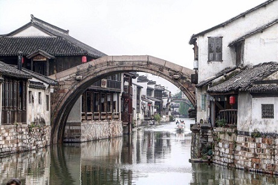
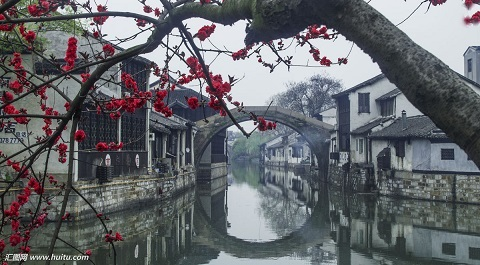

morly旅游圈
南浔古镇地处美丽富饶的杭嘉湖平原腹地，地处江浙沪两省一市交界处,于南宋淳祐年间（1252）建镇，距今已有七百多年的历史，明清时期为江南蚕丝名镇,是“江南六大古镇”中文化积淀最深、保存最完好的古镇，被誉为“江南六大古镇的封面”。
被称为“四象八牛七十二金黄狗”的大贾巨富们在这里建造了一座座集“大气、洋气、财气”于一体的豪门名宅、私家园林，留下了南浔古镇这道中西合璧、令人叹为观止的人文奇葩。凭借独特的历史地位和人文景观，南浔古镇先后获得“世界文化遗产”、“国家AAAAA级旅游景区”、“中国十大魅力名镇”、“中国历史文化名镇”等殊荣。
南浔古镇景区占地面积34．27平方公里，古镇保护范围东界至宜园遗址东侧起，西界至永安街起，南界自嘉业堂藏书楼及小莲庄起，北界至百间楼，保护面积约一百六十八公顷，其中重点保护区面积88公顷。旅游景区共分三大区块。第一块是南浔旅游景点富集区，张石铭故居、刘氏梯号等景点分布其中。第二块是由小莲庄、嘉业堂、文园等景点组成的中心景区。 第三块是以东大街以东的张静江故居和百间楼为主的东北区块。 南浔古镇素有“文化之邦”和“诗书之乡”之称，出现过许多著名人物，如民国奇人张静江，“西泠印社”发起人之一张石铭，著名诗人、散文家徐迟等。
旅游攻略
一、路线
火车：
南浔距离华东第二大通道——宣杭铁路湖州站34 公里，南接杭州，北通南京、北 京；湖乍铁路穿境而过。游客可先乘火车至湖州或嘉兴，再转车前往南浔古镇旅游区。 湖州火车站——南浔古镇
路线一：先乘坐公交21路至公交总公司站，步行至章计村站，再乘坐公交101a 至泰安路车站。下车后游客可以选择步行至南浔古镇景区，也可以乘三轮车去。
路线二：浙北客运中心，每天06：30—17：30有快客到南浔，约15分钟一班；湖州汽车新站发往南浔泰安路客运站的车很多，快客20分钟一班，约1个小时车程。
汽车：
南浔镇内有南浔汽车站和泰安路客运站两个车站。其中，南浔汽车站位于浔溪大桥附近， 318国道边上。主要发外地长途汽车。泰安路汽车站，位于泰安路，近泰安商业广场，以短途客运为主。两车站车次较多，极为方便，距景区也不远。
二、部分景点推荐
1、小莲庄：因慕元代书画家赵孟頫所建的 湖州 莲花庄而得名。 南浔 “五巨构”里唯一保存完整的园子，是晚清“四象”之首刘墉的私家花园； 2、嘉业堂藏书楼：中国近代传统藏书楼藏书最多、规模最大的藏书楼，由刘墉的孙子刘承干建成。嘉业堂藏书楼为中西合璧园林式布局，口字型回廊式厅堂建筑，所有木窗都镂空雕刻着篆字“嘉业堂藏书楼”字样，楼外是大片花园、池塘、假山。1949年以后，嘉业堂藏书楼已经成为浙江图书馆的一部分。 3、百间楼：百间楼因两岸傍河建楼百间，又架长板石桥连接两岸故称为“百间楼”。 4、张静江故居：又名尊德堂，张静江故居由其祖父张颂贤于清同治年间而建，整体建筑为典型的江南豪门大宅风格，高达幽深，尤其是那韵味独特的封火山墙，可称“江南一绝”。 5、求恕里：求恕里属于典型中西合璧的建筑，整个结构由门房、甬道、西洋门楼、卷门、庭院和独立的楼厅组成。 6、辑里湖丝馆：南浔辑里湖丝馆是进中西合璧式建筑，占地950平方米。历史上为南浔商会，由南浔商会会长梅屐中等人于1926年发起建造。该馆共分五个展厅，是一个综合性展馆。 7、广惠宫：始建于北宋治平年间，殿内祀奉道教最高神“三清”神像，始称广惠宫。
三、美食推荐
桔红糕南浔特产，用江南的糯米制成，是传统的冬季时令产品，其特点：颗粒均匀，甜软柔糯;定胜糕:闻来清香，入口甜糯松软，有米粉的颗粒感，中间还夹有豆沙;袜底酥:手掌长度，形似鞋垫，薄薄的，有咸有甜，吃起来极酥香;桃花酿:味道清甜，有淡淡的花香，度数不高，颜值很高。
游客须知：
1、南浔一年四季皆适宜旅游，最最合适的季节还是春秋两季。
2、门票：100元/人，联票制，进景区和游览点均需出示门票。门票当天有效，各游览点限出入一次，晚上5：00左右游览点关门。早上8：00之前、晚上5：00之后出入景区无需门票，但游览点无法进入。1.3米以下儿童、70岁以上老人、大学生半价。网购票便宜20元。带好身份证等证件。
3、分布：分为南景区、北景区。除了百间楼、张静江故居，其他游览点都在南景区。南景区热闹，食店较多；北景区安静悠然，客栈居多。
4、出行：从 湖州 高铁站，直接乘坐101路公交车，先到达终点站 泰安 路汽车站，约一个半小时，8元，再坐电动三轮车（出 租车 几乎见不到）到古镇大门，不到十分钟，一般喊价10元。景区乌篷船，下午5：00后工作人员就下班了。
5、日程建议：下午到景区，住一晚，第二天吃过午饭离开。
内容整理至网络，如有侵权，请联系我们！1255394075@qq.com
 